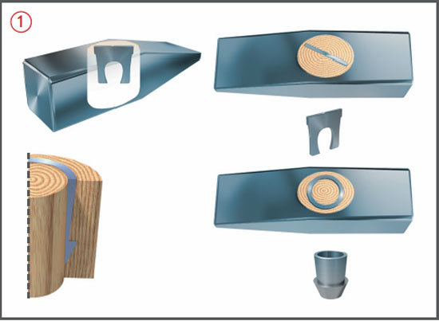
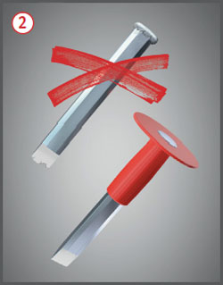
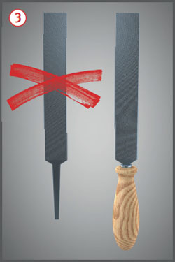
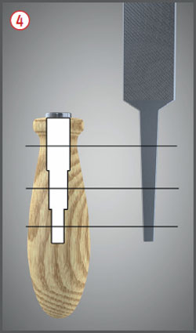
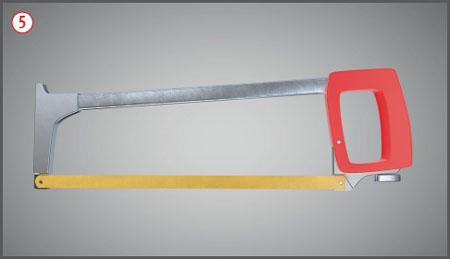
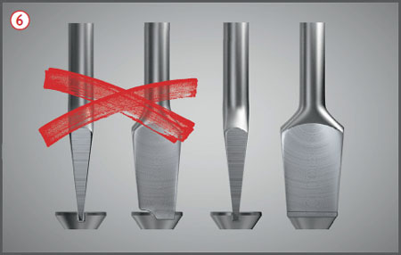
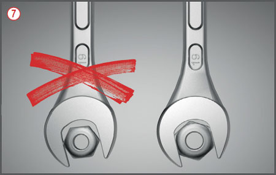

Gefährdungen
- Durch wegfliegende Bruchstücke, ungesichertes Werkzeug oder Werkstück kann es zu Verletzungen kommen.
Schutzmaßnahmen
- Beschädigte Handwerkzeuge sofort dem Gebrauch entziehen und fachgerecht reparieren.
- Spitze und scharfe Werkzeuge nicht lose in den Taschen des Arbeitsanzuges tragen.
- Auf richtige Arbeitshöhe, gute Standsicherheit und ausreichende Bewegungsfreiheit achten.
- Schutzbrille tragen.

Zusätzliche Hinweise
Hammer
- Für die jeweilige Arbeit geeigneten Hammer benutzen.
- Der Hammerkopf muss mit dem Hammerstil unlösbar verbunden, gut eingepasst und fest sitzend sein.
- Spezialkeile zum Befestigen des Holzstieles verwenden
 ; Stahlrohrstiele mit Verstiftungen oder gesicherten Verschraubungen dauerhaft befestigen.
; Stahlrohrstiele mit Verstiftungen oder gesicherten Verschraubungen dauerhaft befestigen.
- Die Hammerbahn muss mit einer Fase versehen sein. Sie bietet Schutz gegen das Abspringen von Randsplittern und die Bildung eines Bartes. Fase entsprechend der Abnutzung nachschleifen.
Meißel
- Nur scharfe Meißel benutzen und im richtigen Arbeitswinkel ansetzen.
- Der Meißelkopf muss ohne Grat und abgerundet sein
 .
.


Feilen
- Feilen nur mit festsitzendem Heft verwenden
 .
.
- Feilenhefte entsprechend den Abmessungen der Feilenangeln wählen
 .
.

Handbügelsägen
- Es wird empfohlen, nur Handbügelsägen mit Schalengriff zu benutzen, um Handverletzungen zu vermeiden.
 .
.
- Sägeblatt richtig einspannen.
- Hände nicht als Führungshilfe verwenden.

Schraubendreher
- Schraubendreher nur mit richtiger Breite und Stärke benutzen, um ein Ausbrechen der Schraubenschlitze und ein Abrutschen zu verhindern
 .
.
- Schraubendreher mit flachen Klingen benutzen, sie dürfen nicht keilförmig eingeschliffen, nicht ausgebrochen oder verbogen sein.
- Schraubendreher nicht als Stemm- oder Stecheisen benutzen.

Schraubenschlüssel
- Schraubenschlüssel nur mit passender Schlüsselweite benutzen
 .
.
- Möglichst Ringschlüssel benutzen, da hierbei die Abrutschgefahr geringer ist.
- Werkzeuge mit abgenutzten oder verbogenen Kanten nicht verwenden, es vergrößert die Abrutschgefahr.
- Hebelkraft nicht durch Aufstecken eines Rohres vergrößern. Das Werkzeug verbiegt oder bricht ab bzw. die Schraubenverbindung wird überlastet und die Schraubenmutter reißt ab.
07/2021